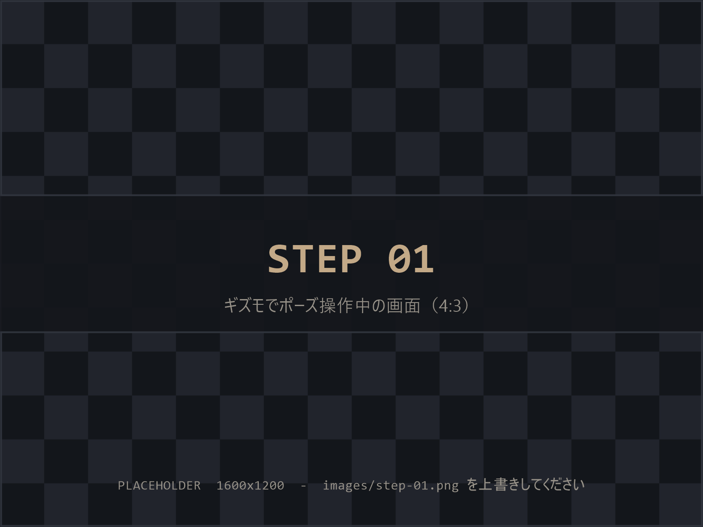
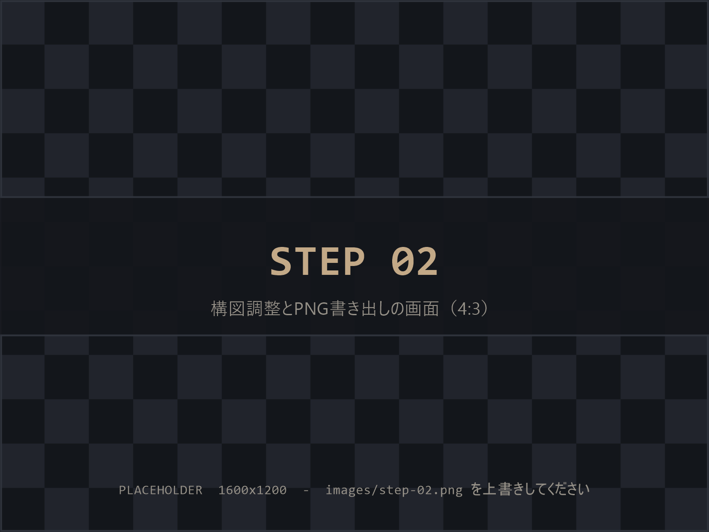
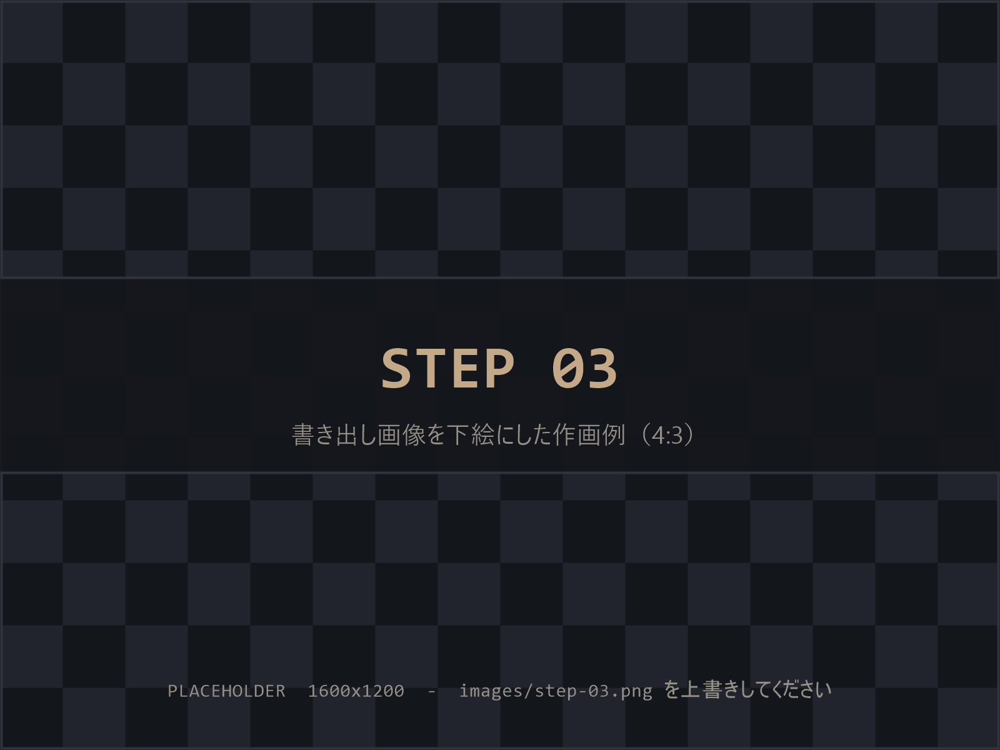
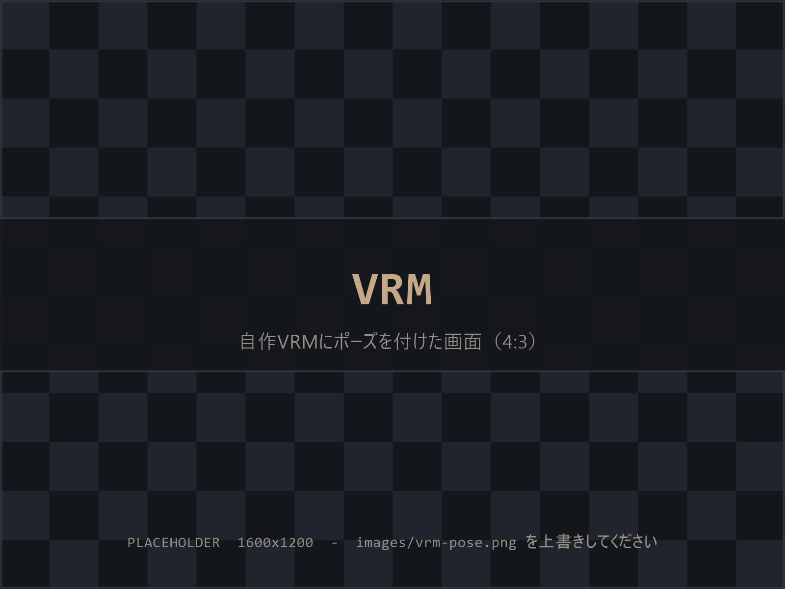

ポーズを付けて、書き出して、描くだけ。
3Dソフトの知識はいりません。関節をつまんで動かす直感操作で、欲しいアングルのポーズ資料が作れます。
STEP 01
ポーズを付ける
関節をクリックして回すだけ。IKで手足を引っ張る操作や、しゃがみ・指のプリセットも。可動域制限で「人体としてありえない曲がり方」を防ぎます（誇張ポーズ用にオフも可）。

STEP 02
構図を決めて書き出す
カメラの画角調整、アオリ・俯瞰のワンクリック切り替え、キャンバス枠の重ね表示。決まったらPNGで保存。背景透過も選べます。

STEP 03
下絵にして描く
書き出した画像はトレース自由。輪郭線表示・グレースケール表示で、線を拾いやすい資料にしてから持ち込めます。

自分のキャラを、そのままポーズ資料に。

- VRoid Studioで作った自作モデルなど、VRMファイル（0.x / 1.0）をドラッグ&ドロップで読み込み
- マネキンで作ったポーズをVRMにそのまま適用。逆も可能（ポーズデータは共通形式）
- 「自分のキャラのこの角度が描けない」を、自分のキャラ自身で解決できます
- 首や頭の向きはそのままに、瞳だけをカメラへ向けることもできます。「顔は横を向いているのに目線だけこちら」といった視線の演出も、そのまま資料にできます
- モデルデータは外部に送信されません（ブラウザ内で完結）
作画資料づくりに要るものを、ひと通り。
FK / IK 操作
関節を個別に回すFKと、手足を引っ張って動かすIKを切り替え。IKで大まかに、FKで微調整。
ピン留め
足先を床に固定したまま腰を落として、自然なしゃがみ・重心移動が作れます。
指ポーズプリセット
パー・グー・指差し・ピース・物を持つ手などをワンクリック適用。自作プリセットの保存も。
ポーズライブラリ
立ち・座り・戦闘など内蔵プリセット20種以上。自作ポーズもサムネイル付きで保存・呼び出し。
部分合成・補間
「上半身だけ別ポーズ」の合成や、2つのポーズの中間を作るスライダー。動きの途中の姿勢づくりに。
輪郭線・トゥーン表示
線を拾いやすい表示に切り替え。グレースケール・シルエット表示も。
構図支援
カメラの保存スロット、画角（mm相当）調整、キャンバス枠、アイレベル線、接地の目安表示。
多角度一括書き出し
正面・側面・背面などをまとめてPNG出力。キャラデザのラフや三面図の下敷きに。
気軽に開けて、安心して使えること。
完全ローカル動作
ポーズもVRMモデルも、あなたのブラウザの中だけで処理。外部サーバーへの送信はありません。
無料・登録不要
アカウント作成なし。URLを開けばすぐ使えます。料金は一切かかりません。
ソースコード公開
中身はすべてGitHubで公開しています。「本当に送信していないか」はコードで確認できます。
作業の自動保存
ブラウザを閉じても作業中のポーズとカメラを復元。うっかり閉じても大丈夫。
よくある質問と利用条件
商用利用はできますか？
ツール自体は商用・非商用を問わず無料でご利用いただけます。ただしVRMモデルを読み込んで使う場合、そのモデルの利用条件（商用可否・改変可否など）はモデル側の規約に従ってください。マネキン（内蔵モデル）にはこうした制限はありません。
書き出した画像をトレースして作品に使えますか？
はい。マネキンで書き出した画像のトレース・加工・下絵利用に制限はなく、成果物の商用利用も自由です。VRMモデルを使った場合は、前項と同じくモデル側の利用条件をご確認ください。
クレジット表記は必要ですか？
不要です。書いてくださったら作者が少し喜びます。
クリスタの3Dデッサン人形と何が違いますか？
いちばんの違いは、ブラウザだけで動くこと・無料であること・VRMモデルを読み込めることです。お絵かきソフトを持っていなくても使えますし、自作のVRoidキャラをそのままポーズ資料にできます。クリスタをお使いの方も、書き出したPNGを下絵として読み込む形で併用できます。
スマホやタブレットで使えますか？
対象外です。PCの最新ブラウザ（Chrome / Edge）でご利用ください。
動作が重い・モデルが読み込めないときは？
まずブラウザの再読み込みをお試しください。VRMの読み込みに失敗する場合は、画面のエラーメッセージと、モデルの入手元を添えてご報告いただけると助かります。報告先は下の「不具合の報告・要望」をご覧ください。
これから増えるもの
開発は継続中です。ツール内でグレー表示になっている機能は、以下の順で追加予定です。
- v1.1複数体の同時配置（最大4体）。マネキンとVRMを混ぜて並べられます。組み合いポーズ・構図検討用開発中
- v1.2小物・プロップ（剣・銃・椅子など）と手への持たせ機能予定
- v1.3体型バリエーション（頭身・体格・男女・子供マネキン）予定
不具合の報告・要望
「ここが動かない」「こうなると嬉しい」を送っていただけると、そのまま次の更新に入ります。どちらでも構いません。